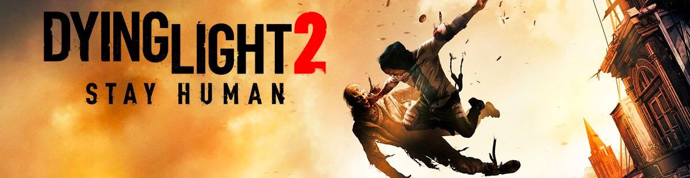
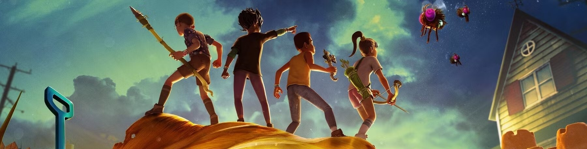
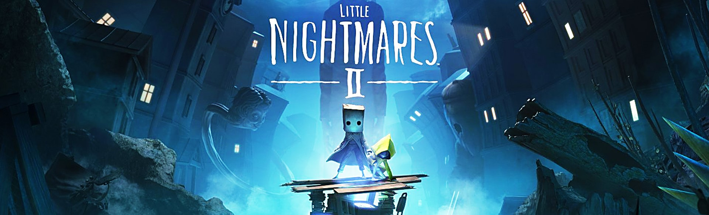

Co-op (short for cooperative) games are a subset of multiplayer games where players work together toward a shared goal rather than competing against each other. These games emphasize teamwork, coordination, and collaboration, offering unique challenges that require players to combine their skills and strategies. From solving intricate puzzles to defeating powerful enemies, co-op games provide a sense of camaraderie and accomplishment as you progress together. Whether played locally or online, co-op games are perfect for friends, family, or anyone looking to team up for an unforgettable gaming experience.
A Way Out
-
Price: LKR 12,000
Release Date: March 23, 2018
Platforms: PlayStation 4, Xbox One, Xbox Series X and Series S, Microsoft WindowsA Way Out is a cooperative action-adventure game played from a third-person perspective. It is specifically designed for split-screen cooperative multiplayer. In the game, players control Leo and Vincent, two convicted prisoners who must break out of prison and stay on the run from authorities. -

Dying Light 2 Stay Human
Price: LKR 18,000
Release Date: February 3, 2022
Platforms: PlayStation 5, PlayStation 4, Xbox One, Nintendo Switch, Xbox Series X and Series S, GeForce Now, Microsoft WindowsDying Light 2 is a cooperative action role-playing survival horror video game featuring a zombie apocalyptic-themed open world. Set 22 years after Dying Light, it stars a new protagonist named Aiden Caldwell (voiced by Jonah Scott), who has various parkour skills. -
It Takes Two
Price: LKR 12,000
Release Date: March 25, 2021
Platforms: PlayStation 5, Nintendo Switch, PlayStation 4, Xbox One, Microsoft WindowsIt Takes Two is an action-adventure video game with elements from platform games. It is specifically designed for split-screen cooperative multiplayer. The game features a large number of game mechanics from various video game genres. For instance, in one level, Cody gains the ability to rewind time, whereas May can replicate herself. Players have to cooperate with each other and utilize these abilities in order to progress. -
The Dark Pictures Anthology: Little Hope
Price: LKR 6,000
Release Date: October 30, 2020
Platforms: PlayStation 5, Nintendo Switch, PlayStation 4, GeForce Now, Xbox Series X and Series S, Microsoft Windows, Xbox OneThe Dark Pictures Anthology: Little Hope is a video game played from a third-person perspective in which the player assumes control of five characters who are trapped in a ghost town of Little Hope. The player needs to choose different dialogue options, which will influence the course of the narrative and the relationships between the protagonists. The game can be played multiple times, as there are multiple endings and multiple scenarios based on the decisions that the players make. -
The Dark Pictures Anthology: Man of Medan
Price: LKR 6,000
Release Date: August 30, 2019
Platforms: PlayStation 5, Nintendo Switch, PlayStation 4, GeForce Now, Xbox Series X and Series S, Microsoft Windows, Xbox OneThe Dark Pictures Anthology: Man of Medan is an interactive drama and survival horror game developed on Unreal Engine 4 by Supermassive Games and played from a third-person perspective in which single or multiple players assume control of five different characters that become trapped on board a ghost ship. -
Left 4 Dead
Price: LKR 3,000
Release Date: November 17, 2008
Platforms: Xbox 360, Microsoft Windows, macOS, GeForce Now, Classic Mac OSLeft 4 Dead is a first-person shooter in which the player takes control of one of four survivors; if human players are not available, the remaining survivors are filled by AI-controlled bots. They play through campaigns fighting off the infected—living humans who have been infected with a rabies-like virus that causes psychosis. The overarching goal is not to clear infected, but only to reach the next safe area alive. -

Grounded
Price: LKR 12,000
Release Date: July 28, 2020
Platforms: PlayStation 5, Nintendo Switch, PlayStation 4, Xbox One, Xbox Series X and Series S, Microsoft WindowsGrounded is a cooperative survival game that can be played either in first-person or a third-person. In the game, the protagonist is shrunk to the size of an ant and must strive to survive in a backyard. In the game, the player character (Max, Willow, Pete or Hoops) needs to consume an adequate amount of food and water, or they will lose health due to starvation or dehydration respectively. -
The Dark Pictures Anthology: The Devil in Me
Price: LKR 12,000
Release Date: November 18, 2022
Platforms: PlayStation 5, Nintendo Switch, PlayStation 4, GeForce Now, Xbox Series X and Series S, Microsoft Windows, Xbox OneThe Devil in Me is an interactive drama cooperative and survival horror game with slasher horror elements developed on Unreal Engine 4 that is presented from a third-person perspective, and takes place at a replica of H. H. Holmes' "Murder Castle". Players take control of five protagonists who are members of a documentary film crew who are shooting the season finale of their documentary series that focuses on Holmes, when they receive an invite to a modern-day replica of the "Murder Castle" hotel. -

Little Nightmares II
Price: LKR 9,000
Release Date: February 10, 2021
Platforms: PlayStation 5, Nintendo Switch, PlayStation 4, Xbox One, Microsoft WindowsLittle Nightmares II is similar to its predecessor; the player explores a 3D world, encountering platforming situations and puzzles that must be solved to proceed. Unlike the first game, the player is not completely helpless; Mono has the ability to grab certain items and swing them to break objects or to fight back against smaller foes, although he, like Six, must rely on stealth and the environment to evade larger foes. -
Helldivers 2
Price: LKR 12,000
Release Date: February 8, 2024
Platforms: PlayStation 5, Microsoft WindowsHelldivers 2 is a shooter game primarily played from a third-person perspective. Players complete tasks (called "Missions") in procedurally generated levels (or "Operations") while fending off hordes of enemies. It features cooperative multiplayer with up to four players, but does not include a dedicated single-player campaign.